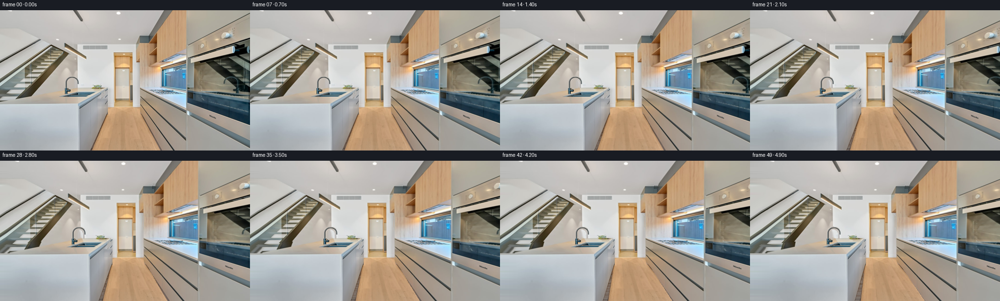
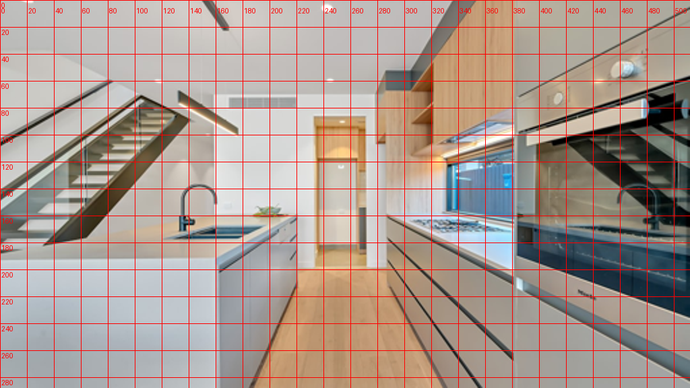
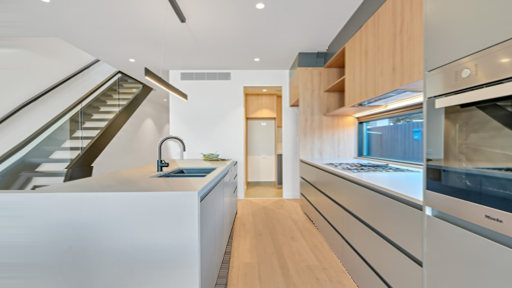

CODING AGENTS AS PIXEL WORLD MODELS
traex/GPT-6.1-Sol · static_080_turn_1
点击播放 · 原生 RGB 像素
逐轮保存的候选
回放视频、检查图与代码变化。
每份候选均可单独播放。实际图片检查记录在下方工具轨迹中。
候选 01播放与检查图
点击播放 · 原生 RGB 像素
展开代码变化
--- 上一保存版本
+++ 本次保存版本
@@ -0,0 +1,145 @@
+from pathlib import Path
+import numpy as np
+from PIL import Image, ImageDraw
+import cv2
+import artifact_io
+
+ROOT=Path(__file__).resolve().parent
+W,H=512,288
+EXT=112
+SCALE=2
+
+def polygon_mask(points, shape=(H,W+EXT)):
+ m=Image.new('L',(shape[1],shape[0]),0)
+ ImageDraw.Draw(m).polygon([(x+EXT,y) for x,y in points],fill=255)
+ return np.asarray(m)>0
+
+def scene():
+ original=np.asarray(Image.open(ROOT/'first_frame.png').convert('RGB'))
+ yy,xx=np.mgrid[:H,-EXT:W]
+ image=np.empty((H,W+EXT,3),np.float32)
+ image[:,EXT:]=original
+ # Analytic continuation of the left boundary planes, including the diagonal
+ # staircase which continues behind the kitchen island.
+ for x in range(-EXT,0):
+ y=np.arange(H,dtype=np.float32)
+ sy=y.copy()
+ sy[(y>70)&(y<190)]=y[(y>70)&(y<190)]+0.64*x
+ sy=np.clip(sy,0,H-1)
+ a=np.floor(sy).astype(int); b=np.minimum(a+1,H-1); w=sy-a
+ row=(1-w[:,None])*original[a,0]+w[:,None]*original[b,0]
+ # Gradients extrapolate the matte plaster and lacquer rather than mirror them.
+ grad=(original[:,9].astype(float)-original[:,0].astype(float))/9
+ off=np.clip(grad*x,-9,9)
+ row[y<70]+=off[y<70]
+ row[y>=191]+=off[y>=191]*.6
+ image[:,x+EXT]=np.clip(row,0,255)
+ # Relative inverse distance. All transforms are horizontal projections of
+ # stationary surfaces; planar surfaces retain straight architecture lines.
+ d=np.full((H,W+EXT),.28,np.float32)
+ ceil=polygon_mask([(-EXT,0),(352,0),(305,53),(280,72),(158,72),(-EXT,38-.25*EXT)])
+ dc=.28+(71-yy)*.0032
+ d[ceil]=dc[ceil]
+ lw=polygon_mask([(-EXT,38-.25*EXT),(0,38),(83,59),(157,75),(158,192),(-EXT,192)])
+ dl=.48-.00124*xx
+ d[lw]=dl[lw]
+ floor=polygon_mask([(-EXT,191),(220,197),(286,197),(512,288),(-EXT,288)])
+ df=.30+(yy-197)*(.74/91)
+ d[floor]=df[floor]
+ # The stair's treads, stringers and transparent balustrade stay attached.
+ stairs=polygon_mask([(-EXT,105+.64*EXT),(83,58),(85,60),(0,113),
+ (0,135),(102,71),(105,73),(140,89),(36,179),(-EXT,186+.64*EXT)])
+ ds=.75-.0028*xx
+ d[stairs]=ds[stairs]
+ # Continuous projection of the full right-hand cabinetry wall.
+ right=polygon_mask([(321,0),(512,0),(512,288),(320,288),(286,197),(286,160),
+ (287,113),(280,105),(280,71),(304,69),(306,54)])
+ dr=.34+(xx-286)*(.76/95)
+ d[right]=dr[right]
+ # Front, worktop and side of the island: separate planes meeting at identical depths.
+ top=polygon_mask([(-EXT,191),(-EXT,191),(160,191),(220,161),(207,157),(137,159),(-EXT,186)])
+ dt=.44+(yy-161)*(.56/30)
+ d[top]=dt[top]
+ front=polygon_mask([(-EXT,191),(161,191),(162,288),(-EXT,288)])
+ d[front]=1.0
+ side=polygon_mask([(161,191),(220,161),(220,212),(185,288),(162,288)])
+ di=1.0-(xx-161)*(.56/59)
+ d[side]=di[side]
+ # The tap is closer than the wall visible through its arch.
+ faucet=polygon_mask([(130,170),(131,150),(133,142),(136,137),(142,135),
+ (150,136),(155,139),(159,146),(160,157),(156,157),
+ (156,146),(152,141),(146,139),(139,141),(136,145),
+ (136,159),(146,161),(145,168),(136,169)])
+ d[faucet]=.68
+ fruit=polygon_mask([(183,158),(187,152),(195,151),(204,154),(207,158),(201,161),(189,161)])
+ d[fruit]=.44
+ pendant=polygon_mask([(131,67),(177,91),(177,101),(131,78)])
+ d[pendant]=.37
+ # Suspension threads share their anchor's physical depth.
+ cord=polygon_mask([(147,0),(149,0),(150,78),(148,78)])
+ d[cord]=.37
+ return original,image,d
+
+def render(image,depth,amount):
+ # Supersampled, depth-tested forward scanline projection. At an occlusion
+ # discontinuity, extrapolate only the farther surface into a revealed strip.
+ h,w=image.shape[:2]
+ s=SCALE
+ tex=cv2.resize(image,(w*s,h*s),interpolation=cv2.INTER_CUBIC)
+ dep=cv2.resize(depth,(w*s,h*s),interpolation=cv2.INTER_NEAREST)
+ xs=np.arange(w*s,dtype=np.float32)/s-EXT
+ destx=np.arange(W*s,dtype=np.float32)/s
+ out=np.empty((H*s,W*s,3),np.float32)
+ for y in range(H*s):
+ dd=dep[y]
+ u=xs+amount*dd
+ # Break the projection into continuous, depth-ordered planar intervals.
+ cuts=np.r_[0,np.where(np.abs(np.diff(dd))>.022)[0]+1,w*s]
+ rgb=np.zeros((W*s,3),np.float32)
+ z=np.full(W*s,-10.,np.float32)
+ for a,b in zip(cuts[:-1],cuts[1:]):
+ if b-a<2: continue
+ lo=max(0,int(np.ceil(u[a]*s))); hi=min(W*s,int(np.floor(u[b-1]*s))+1)
+ if hi<=lo: continue
+ q=np.arange(lo,hi)
+ ud=destx[q]
+ nd=np.interp(ud,u[a:b],dd[a:b])
+ keep=nd>=z[q]
+ ix=q[keep]
+ for c in range(3):
+ rgb[ix,c]=np.interp(destx[ix],u[a:b],tex[y,a:b,c])
+ z[ix]=nd[keep]
+ # Subpixel gaps between segments are interpolated. Disocclusions use
+ # the visible background instead of stretching a near object's edge.
+ bad=np.where(z<0)[0]
+ if len(bad):
+ groups=np.split(bad,np.where(np.diff(bad)>1)[0]+1)
+ for q in groups:
+ a,b=q[0],q[-1]
+ l=a-1; r=b+1
+ if l<0:
+ rgb[q]=rgb[r] if r<W*s else (200,200,196)
+ elif r>=W*s:
+ rgb[q]=rgb[l]
+ elif len(q)<=3:
+ t=(q-l)/(r-l)
+ rgb[q]=rgb[l]*(1-t[:,None])+rgb[r]*t[:,None]
+ elif z[l]<z[r]:
+ rgb[q]=np.mean(rgb[max(0,l-3):l+1],axis=0)
+ else:
+ rgb[q]=np.mean(rgb[r:min(W*s,r+4)],axis=0)
+ out[y]=rgb
+ return np.clip(cv2.resize(out,(W,H),interpolation=cv2.INTER_AREA),0,255).round().astype(np.uint8)
+
+def main():
+ original,image,d=scene()
+ frames=[original]
+ for i in range(1,50):
+ t=i/49
+ # Constant lateral travel with gentle acceleration at the endpoints.
+ travel=50*(t-.075*np.sin(2*np.pi*t)/(2*np.pi))
+ frames.append(render(image,d,travel))
+ frames=np.stack(frames)
+ artifact_io.save(frames,ROOT)
+
+if __name__=='__main__':main()
候选 02播放与检查图
候选 03播放与检查图
点击播放 · 原生 RGB 像素

展开代码变化
--- 上一保存版本
+++ 本次保存版本
@@ -34,23 +34,18 @@
row[y<70]+=off[y<70]
row[y>=191]+=off[y>=191]*.6
image[:,x+EXT]=np.clip(row,0,255)
- # Relative inverse distance. All transforms are horizontal projections of
- # stationary surfaces; planar surfaces retain straight architecture lines.
+ # Relative inverse distance. Broad continuous planes retain the clean
+ # architectural lines without requiring unseen content or learned depth.
d=np.full((H,W+EXT),.28,np.float32)
- ceil=polygon_mask([(-EXT,0),(352,0),(305,53),(280,72),(158,72),(-EXT,38-.25*EXT)])
- dc=.28+(71-yy)*.0032
+ leftdepth=.28+.0020*np.maximum(157-xx,0)
+ d=np.where(xx<157,leftdepth,d).astype(np.float32)
+ ceiling_edge=np.where(xx<83,38+.25*xx, np.where(xx<157,59+.176*(xx-83),72))
+ ceil=(yy<ceiling_edge)&(xx<306)
+ dc=leftdepth+(ceiling_edge-yy)*.0027
d[ceil]=dc[ceil]
- lw=polygon_mask([(-EXT,38-.25*EXT),(0,38),(83,59),(157,75),(158,192),(-EXT,192)])
- dl=.48-.00124*xx
- d[lw]=dl[lw]
floor=polygon_mask([(-EXT,191),(220,197),(286,197),(512,288),(-EXT,288)])
- df=.30+(yy-197)*(.74/91)
+ df=.28+(yy-197)*(.74/91)
d[floor]=df[floor]
- # The stair's treads, stringers and transparent balustrade stay attached.
- stairs=polygon_mask([(-EXT,105+.64*EXT),(83,58),(85,60),(0,113),
- (0,135),(102,71),(105,73),(140,89),(36,179),(-EXT,186+.64*EXT)])
- ds=.75-.0028*xx
- d[stairs]=ds[stairs]
# Continuous projection of the full right-hand cabinetry wall.
right=polygon_mask([(321,0),(512,0),(512,288),(320,288),(286,197),(286,160),
(287,113),(280,105),(280,71),(304,69),(306,54)])
@@ -65,19 +60,14 @@
side=polygon_mask([(161,191),(220,161),(220,212),(185,288),(162,288)])
di=1.0-(xx-161)*(.56/59)
d[side]=di[side]
- # The tap is closer than the wall visible through its arch.
- faucet=polygon_mask([(130,170),(131,150),(133,142),(136,137),(142,135),
- (150,136),(155,139),(159,146),(160,157),(156,157),
- (156,146),(152,141),(146,139),(139,141),(136,145),
- (136,159),(146,161),(145,168),(136,169)])
- d[faucet]=.68
- fruit=polygon_mask([(183,158),(187,152),(195,151),(204,154),(207,158),(201,161),(189,161)])
- d[fruit]=.44
+ # Only the dark metal belongs to the faucet, not the wall through its arch.
+ faucet_window=(xx>=130)&(xx<=161)&(yy>=134)&(yy<=174)
+ dark=(image.mean(axis=2)<143)
+ faucet=faucet_window&dark
+ d[faucet]=.64
+ # The suspended pendant has a constant depth and its slim wires remain rigid.
pendant=polygon_mask([(131,67),(177,91),(177,101),(131,78)])
d[pendant]=.37
- # Suspension threads share their anchor's physical depth.
- cord=polygon_mask([(147,0),(149,0),(150,78),(148,78)])
- d[cord]=.37
return original,image,d
def render(image,depth,amount):
@@ -137,7 +127,7 @@
for i in range(1,50):
t=i/49
# Constant lateral travel with gentle acceleration at the endpoints.
- travel=50*(t-.075*np.sin(2*np.pi*t)/(2*np.pi))
+ travel=38*(t-.075*np.sin(2*np.pi*t)/(2*np.pi))
frames.append(render(image,d,travel))
frames=np.stack(frames)
artifact_io.save(frames,ROOT)
候选 04播放与检查图
候选 05播放与检查图
点击播放 · 原生 RGB 像素

展开代码变化
--- 上一保存版本
+++ 本次保存版本
@@ -60,15 +60,20 @@
side=polygon_mask([(161,191),(220,161),(220,212),(185,288),(162,288)])
di=1.0-(xx-161)*(.56/59)
d[side]=di[side]
- # Only the dark metal belongs to the faucet, not the wall through its arch.
- faucet_window=(xx>=130)&(xx<=161)&(yy>=134)&(yy<=174)
- dark=(image.mean(axis=2)<143)
- faucet=faucet_window&dark
- d[faucet]=.64
- # The suspended pendant has a constant depth and its slim wires remain rigid.
- pendant=polygon_mask([(131,67),(177,91),(177,101),(131,78)])
- d[pendant]=.37
- return original,image,d
+ # Recover the wall and worktop just behind the faucet. The thin metal
+ # silhouette is then projected as a separate, completely static object.
+ faucet_points=[(133,173),(133,147),(134,143),(137,139),(141,137),
+ (146,136),(152,137),(157,140),(159,144),(161,150),(161,158),
+ (157,158),(157,148),(155,143),(152,141),(147,139),(141,140),
+ (138,143),(137,148),(137,158),(144,159),(144,164),(138,164),
+ (138,166),(145,166),(145,171)]
+ fm=polygon_mask(faucet_points)
+ # Full coverage of antialiased edges, with an unobtrusive feather.
+ fm=cv2.dilate(fm.astype(np.uint8),np.ones((3,3),np.uint8))*255
+ object_texture=image.copy()
+ image=cv2.inpaint(np.clip(image,0,255).astype(np.uint8),fm,4,cv2.INPAINT_TELEA).astype(np.float32)
+ alpha=cv2.GaussianBlur(fm.astype(np.float32)/255,(3,3),.42)
+ return original,image,d,object_texture,alpha
def render(image,depth,amount):
# Supersampled, depth-tested forward scanline projection. At an occlusion
@@ -122,13 +127,19 @@
return np.clip(cv2.resize(out,(W,H),interpolation=cv2.INTER_AREA),0,255).round().astype(np.uint8)
def main():
- original,image,d=scene()
+ original,image,d,object_texture,alpha=scene()
frames=[original]
for i in range(1,50):
t=i/49
# Constant lateral travel with gentle acceleration at the endpoints.
travel=38*(t-.075*np.sin(2*np.pi*t)/(2*np.pi))
- frames.append(render(image,d,travel))
+ frame=render(image,d,travel).astype(np.float32)
+ gy,gx=np.mgrid[:H,:W].astype(np.float32)
+ mx=(gx+EXT-travel*.64).astype(np.float32)
+ fg=cv2.remap(object_texture,mx,gy,cv2.INTER_CUBIC,borderMode=cv2.BORDER_REPLICATE)
+ am=cv2.remap(alpha,mx,gy,cv2.INTER_LINEAR,borderMode=cv2.BORDER_CONSTANT)
+ frame=frame*(1-am[:,:,None])+fg*am[:,:,None]
+ frames.append(np.clip(frame,0,255).round().astype(np.uint8))
frames=np.stack(frames)
artifact_io.save(frames,ROOT)
可观测工具轨迹
实际执行的命令与返回图片。
命令 1exit 0
/bin/bash -lc 'ls -la && cat prompt.txt && cat GENERATION_RULES.md'
命令 2exit 0
/bin/bash -lc "cat task_spec.json && cat artifact_io.py && python - <<'PY'
from PIL import Image
im=Image.open('first_frame.png'); im.resize((1024,576)).save('.tmp/large.png')
PY"命令 3exit 0
/bin/bash -lc "python - <<'PY'
from PIL import Image,ImageDraw
im=Image.open('first_frame.png').resize((1024,576))
d=ImageDraw.Draw(im)
for x in range(0,513,20):
d.line((2*x,0,2*x,576),fill=(255,0,0),width=1);d.text((2*x+2,10),str(x), fill=(255,0,0))
for y in range(0,289,20):
d.line((0,2*y,1024,2*y),fill=(255,0,0),width=1);d.text((2,2*y+2),str(y),fill=(255,0,0))
im.save('.tmp/grid.png')
PY"命令 4exit 0
/bin/bash -lc "python - <<'PY' import importlib.util for n in ['numpy','PIL','cv2','scipy','numba']: print(n,bool(importlib.util.find_spec(n))) PY"
命令 5exit 0
/bin/bash -lc "cat > generate.py <<'PY'
from pathlib import Path
import numpy as np
from PIL import Image, ImageDraw
import cv2
import artifact_io
ROOT=Path(__file__).resolve().parent
W,H=512,288
EXT=112
SCALE=2
def polygon_mask(points, shape=(H,W+EXT)):
m=Image.new('L',(shape[1],shape[0]),0)
ImageDraw.Draw(m).polygon([(x+EXT,y) for x,y in points],fill=255)
return np.asarray(m)>0
def scene():
original=np.asarray(Image.open(ROOT/'first_frame.png').convert('RGB'))
yy,xx=np.mgrid[:H,-EXT:W]
image=np.empty((H,W+EXT,3),np.float32)
image[:,EXT:]=original
# Analytic continuation of the left boundary planes, including the diagonal
# staircase which continues behind the kitchen island.
for x in range(-EXT,0):
y=np.arange(H,dtype=np.float32)
sy=y.copy()
sy[(y>70)&(y<190)]=y[(y>70)&(y<190)]+0.64*x
sy=np.clip(sy,0,H-1)
a=np.floor(sy).astype(int); b=np.minimum(a+1,H-1); w=sy-a
row=(1-w[:,None])*original[a,0]+w[:,None]*original[b,0]
# Gradients extrapolate the matte plaster and lacquer rather than mirror them.
grad=(original[:,9].astype(float)-original[:,0].astype(float))/9
off=np.clip(grad*x,-9,9)
row[y<70]+=off[y<70]
row[y>=191]+=off[y>=191]*.6
image[:,x+EXT]=np.clip(row,0,255)
# Relative inverse distance. All transforms are horizontal projections of
# stationary surfaces; planar surfaces retain straight architecture lines.
d=np.full((H,W+EXT),.28,np.float32)
ceil=polygon_mask([(-EXT,0),(352,0),(305,53),(280,72),(158,72),(-EXT,38-.25*EXT)])
dc=.28+(71-yy)*.0032
d[ceil]=dc[ceil]
lw=polygon_mask([(-EXT,38-.25*EXT),(0,38),(83,59),(157,75),(158,192),(-EXT,192)])
dl=.48-.00124*xx
d[lw]=dl[lw]
floor=polygon_mask([(-EXT,191),(220,197),(286,197),(512,288),(-EXT,288)])
df=.30+(yy-197)*(.74/91)
d[floor]=df[floor]
# The stair's treads, stringers and transparent balustrade stay attached.
stairs=polygon_mask([(-EXT,105+.64*EXT),(83,58),(85,60),(0,113),
(0,135),(102,71),(105,73),(140,89),(36,179),(-EXT,186+.64*EXT)])
ds=.75-.0028*xx
d[stairs]=ds[stairs]
# Continuous projection of the full right-hand cabinetry wall.
right=polygon_mask([(321,0),(512,0),(512,288),(320,288),(286,197),(286,160),
(287,113),(280,105),(280,71),(304,69),(306,54)])
dr=.34+(xx-286)*(.76/95)
d[right]=dr[right]
# Front, worktop and side of the island: separate planes meeting at identical depths.
top=polygon_mask([(-EXT,191),(-EXT,191),(160,191),(220,161),(207,157),(137,159),(-EXT,186)])
dt=.44+(yy-161)*(.56/30)
d[top]=dt[top]
front=polygon_mask([(-EXT,191),(161,191),(162,288),(-EXT,288)])
d[front]=1.0
side=polygon_mask([(161,191),(220,161),(220,212),(185,288),(162,288)])
di=1.0-(xx-161)*(.56/59)
d[side]=di[side]
# The tap is closer than the wall visible through its arch.
faucet=polygon_mask([(130,170),(131,150),(133,142),(136,137),(142,135),
(150,136),(155,139),(159,146),(160,157),(156,157),
(156,146),(152,141),(146,139),(139,141),(136,145),
(136,159),(146,161),(145,168),(136,169)])
d[faucet]=.68
fruit=polygon_mask([(183,158),(187,152),(195,151),(204,154),(207,158),(201,161),(189,161)])
d[fruit]=.44
pendant=polygon_mask([(131,67),(177,91),(177,101),(131,78)])
d[pendant]=.37
# Suspension threads share their anchor's physical depth.
cord=polygon_mask([(147,0),(149,0),(150,78),(148,78)])
d[cord]=.37
return original,image,d
def render(image,depth,amount):
# Supersampled, depth-tested forward scanline projection. At an occlusion
# discontinuity, extrapolate only the farther surface into a revealed strip.
h,w=image.shape[:2]
s=SCALE
tex=cv2.resize(image,(w*s,h*s),interpolation=cv2.INTER_CUBIC)
dep=cv2.resize(depth,(w*s,h*s),interpolation=cv2.INTER_NEAREST)
xs=np.arange(w*s,dtype=np.float32)/s-EXT
destx=np.arange(W*s,dtype=np.float32)/s
out=np.empty((H*s,W*s,3),np.float32)
for y in range(H*s):
dd=dep[y]
u=xs+amount*dd
# Break the projection into continuous, depth-ordered planar intervals.
cuts=np.r_[0,np.where(np.abs(np.diff(dd))>.022)[0]+1,w*s]
rgb=np.zeros((W*s,3),np.float32)
z=np.full(W*s,-10.,np.float32)
for a,b in zip(cuts[:-1],cuts[1:]):
if b-a<2: continue
lo=max(0,int(np.ceil(u[a]*s))); hi=min(W*s,int(np.floor(u[b-1]*s))+1)
if hi<=lo: continue
q=np.arange(lo,hi)
ud=destx[q]
nd=np.interp(ud,u[a:b],dd[a:b])
keep=nd>=z[q]
ix=q[keep]
for c in range(3):
rgb[ix,c]=np.interp(destx[ix],u[a:b],tex[y,a:b,c])
z[ix]=nd[keep]
# Subpixel gaps between segments are interpolated. Disocclusions use
# the visible background instead of stretching a near object's edge.
bad=np.where(z<0)[0]
if len(bad):
groups=np.split(bad,np.where(np.diff(bad)>1)[0]+1)
for q in groups:
a,b=q[0],q[-1]
l=a-1; r=b+1
if l<0:
rgb[q]=rgb[r] if r<W*s else (200,200,196)
elif r>=W*s:
rgb[q]=rgb[l]
elif len(q)<=3:
t=(q-l)/(r-l)
rgb[q]=rgb[l]*(1-t[:,None])+rgb[r]*t[:,None]
elif z[l]<z[r]:
rgb[q]=np.mean(rgb[max(0,l-3):l+1],axis=0)
else:
rgb[q]=np.mean(rgb[r:min(W*s,r+4)],axis=0)
out[y]=rgb
return np.clip(cv2.resize(out,(W,H),interpolation=cv2.INTER_AREA),0,255).round().astype(np.uint8)
def main():
original,image,d=scene()
frames=[original]
for i in range(1,50):
t=i/49
# Constant lateral travel with gentle acceleration at the endpoints.
travel=50*(t-.075*np.sin(2*np.pi*t)/(2*np.pi))
frames.append(render(image,d,travel))
frames=np.stack(frames)
artifact_io.save(frames,ROOT)
if __name__=='__main__':main()
PY
OPENBLAS_NUM_THREADS=1 python generate.py"命令 6exit 0
/bin/bash -lc "python - <<'PY'
p='generate.py'
s=open(p).read()
a=s.index(' # Relative inverse distance.')
b=s.index(' # Continuous projection of the full right-hand cabinetry wall.')
s=s[:a]+''' # Relative inverse distance. Broad continuous planes retain the clean
# architectural lines without requiring unseen content or learned depth.
d=np.full((H,W+EXT),.28,np.float32)
leftdepth=.28+.0020*np.maximum(157-xx,0)
d=np.where(xx<157,leftdepth,d).astype(np.float32)
ceiling_edge=np.where(xx<83,38+.25*xx, np.where(xx<157,59+.176*(xx-83),72))
ceil=(yy<ceiling_edge)&(xx<306)
dc=leftdepth+(ceiling_edge-yy)*.0027
d[ceil]=dc[ceil]
floor=polygon_mask([(-EXT,191),(220,197),(286,197),(512,288),(-EXT,288)])
df=.28+(yy-197)*(.74/91)
d[floor]=df[floor]
''' + s[b:]
a=s.index(' # The tap is closer')
b=s.index(' return original,image,d')
s=s[:a]+''' # Only the dark metal belongs to the faucet, not the wall through its arch.
faucet_window=(xx>=130)&(xx<=161)&(yy>=134)&(yy<=174)
dark=(image.mean(axis=2)<143)
faucet=faucet_window&dark
d[faucet]=.64
# The suspended pendant has a constant depth and its slim wires remain rigid.
pendant=polygon_mask([(131,67),(177,91),(177,101),(131,78)])
d[pendant]=.37
''' + s[b:]
s=s.replace('travel=50*','travel=38*')
open(p,'w').write(s)
PY
OPENBLAS_NUM_THREADS=1 python generate.py"命令 7exit 1
/bin/bash -lc "python - <<'PY'
p='generate.py'
s=open(p).read()
a=s.index(' # Only the dark metal')
b=s.index(' return original,image,d')
s=s[:a]+''' # Recover the wall and worktop just behind the faucet. The thin metal
# silhouette is then projected as a separate, completely static object.
faucet_points=[(133,173),(133,147),(134,143),(137,139),(141,137),
(146,136),(152,137),(157,140),(159,144),(161,150),(161,158),
(157,158),(157,148),(155,143),(152,141),(147,139),(141,140),
(138,143),(137,148),(137,158),(144,159),(144,164),(138,164),
(138,166),(145,166),(145,171)]
fm=polygon_mask(faucet_points)
# Full coverage of antialiased edges, with an unobtrusive feather.
fm=cv2.dilate(fm.astype(np.uint8),np.ones((3,3),np.uint8))*255
object_texture=image.copy()
image=cv2.inpaint(np.clip(image,0,255).astype(np.uint8),fm,4,cv2.INPAINT_TELEA).astype(np.float32)
alpha=cv2.GaussianBlur(fm.astype(np.float32)/255,(3,3),.42)
return original,image,d,object_texture,alpha
''' + s[b+len(' return original,image,d\\n'):]
s=s.replace('original,image,d=scene()','original,image,d,object_texture,alpha=scene()')
s=s.replace(' frames.append(render(image,d,travel))',''' frame=render(image,d,travel).astype(np.float32)
gy,gx=np.mgrid[:H,:W].astype(np.float32)
mx=gx+EXT-travel*.64
fg=cv2.remap(object_texture,mx,gy,cv2.INTER_CUBIC,borderMode=cv2.BORDER_REPLICATE)
am=cv2.remap(alpha,mx,gy,cv2.INTER_LINEAR,borderMode=cv2.BORDER_CONSTANT)
frame=frame*(1-am[:,:,None])+fg*am[:,:,None]
frames.append(np.clip(frame,0,255).round().astype(np.uint8))''')
open(p,'w').write(s)
PY
OPENBLAS_NUM_THREADS=1 python generate.py"命令 8exit 0
/bin/bash -lc "sed -i 's/mx=gx+EXT-travel\\*\\.64/mx=(gx+EXT-travel*.64).astype(np.float32)/' generate.py OPENBLAS_NUM_THREADS=1 python generate.py"
命令 9exit 0
/bin/bash -lc "which ffmpeg || true; python - <<'PY'
from PIL import Image
import numpy as np
from pathlib import Path
f=list(Path('frames').glob('*.png'))
a=np.asarray(Image.open('first_frame.png'))
b=np.asarray(Image.open('frames/00.png'))
print('Frames:',len(f),'First frame identical:',np.array_equal(a,b))
z=np.load('pixels.npz')['pixels'];print('Stored tensor:',z.shape,z.dtype)
PY"视觉工具实际返回图片 1
视觉工具实际返回图片 2

视觉工具实际返回图片 3

视觉工具实际返回图片 4
视觉工具实际返回图片 5

保存候选 5 份；完成命令 9 次；可验证图片返回 5 张。原始 API 响应与完整日志保留在本地。